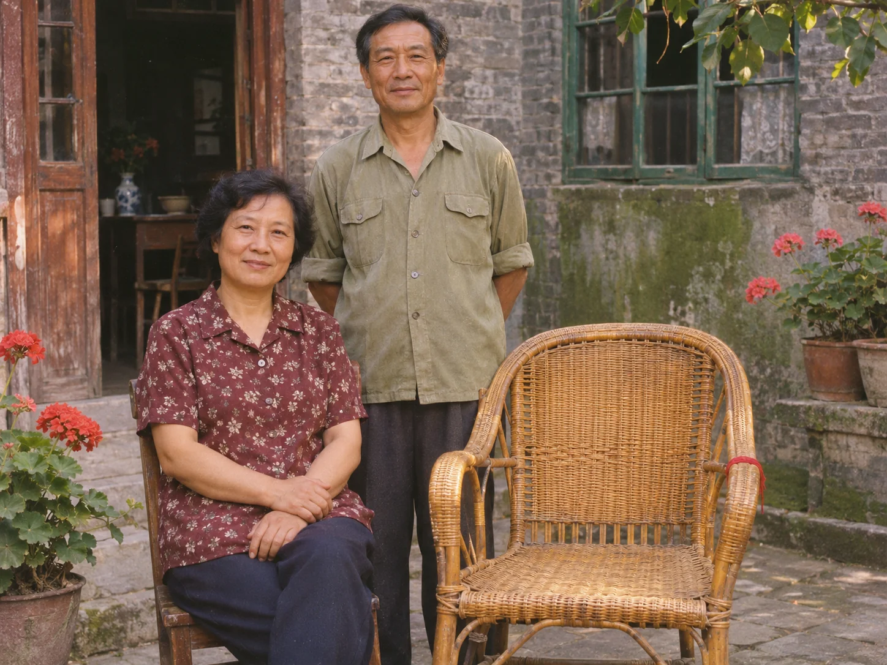
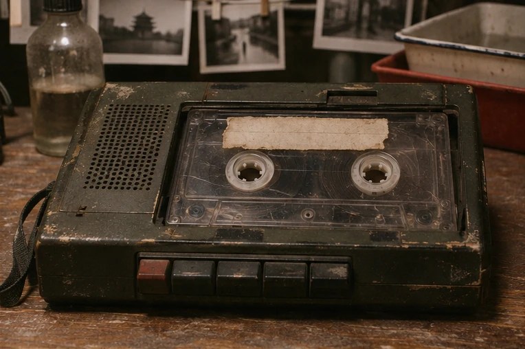
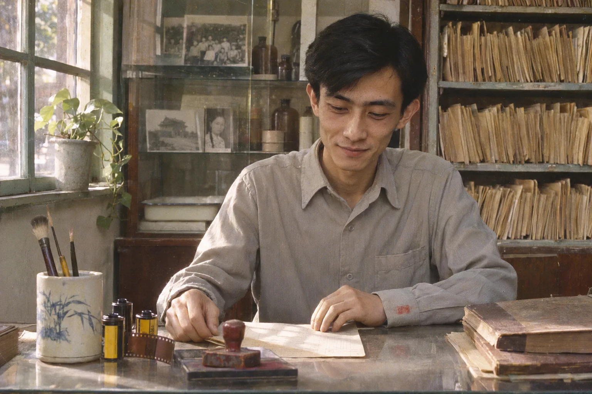

ANALOG RESTORATION STUDIO
让旧照片，重新显影。
从发白的银盐相纸，到藏在抽屉里的家庭底片。
我们手工修复每一张，也保留它原来的样子。
南桥巷手工影像工作室EST. 1987

原片修复后
拖动分界线，对比修复前后
SELECTED RESTORATIONS
近期修复案例
DAY SHIFT / 014-A
盖子底下的绿
给邮筒定一份色样
PROOF SHEET / 27-B
交件前，帮我们校一次样。
南桥巷旧照相馆留底 1998.11.29
南桥
19982004 年加洗附记 · 蓝色圆珠笔
19982004 年加洗附记 · 蓝色圆珠笔
洗两张。一张给他，
一张放在那把椅子上。
工单 27-B · 校样第一联
右手边那把藤椅，
右手边那把藤椅，
你第一眼看见了什么？
老师傅习惯先记第一眼，再拿放大镜。第一联落笔后留底，稍后可以取出来逐字核对。
也可以把第一联留白。
DAY SHIFT / 031-C
把尾音留下

给真正的挂机点做记号
读逐字稿与声音位置
COUNTER COPY
收据的骑缝
白班留件单
未经手的栏位留空。继续下翻，由柜台结班。
NIGHT SHIFT / 014-A
他站在哪一边
旧邮局玻璃
CARBON DUPLICATE
同一支笔，
两种笔迹。
柜台底下夹着第二联。日期是 1998 年 11 月 29 日。把它和刚才的留底放在一起，最下面那行字没有对齐。
南桥照相馆复写联 · 27-B
托洗物院中合影 一底两印
第一联原话此栏未落笔
第二联存档隔着蜡纸，墨迹透不过来。
复写纸的黑面朝上。墨本应落在另一面。
第二次叫号，按哪一栏叫人？
NIGHT SHIFT / 027-B
母亲的两只相框
先选校样，再选相框
试播逐字稿
TAPE TRANSPORT
带子已经拿出来了
停机检视
对读两声道
NIGHT SHIFT / 031-C
三份雨夜记录

旧灯台 · 对齐骑缝印
用每份副本上的残圆找原件。三个半圆接回同一张雨夜回执，就能读全拍摄位置。
CATALOGUE / �TANG
第四项来件

COLLECTION RECEIPT